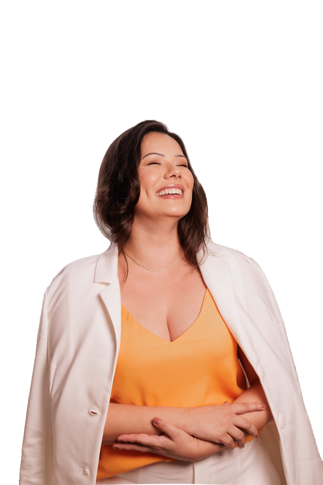

Como começa
Uma conversa clara antes de qualquer decisão sobre o cuidado estético
A primeira etapa é entender objetivos, histórico, rotina, conforto e tempo disponível. A partir disso, a orientação fica mais segura, pessoal e realista.
- Escutar o que você deseja compreender.
- Avaliar contexto, pele e expectativas.
- Conversar sobre caminhos possíveis sem pressa.
Avaliação
A indicação depende do que faz sentido para você
Nem toda opção é adequada para toda pessoa ou para todo momento. A avaliação ajuda a separar o que parece interessante do que realmente pode ser responsável.
Orientação
Leitura útil antes da decisão
As páginas de orientação ajudam você a chegar à consulta com perguntas melhores e mais clareza sobre pele, laser, resultados e cuidados posteriores.
Expectativas
O que precisa ficar claro
Um plano responsável deve explicar limites, preparo, possíveis cuidados posteriores e a variação natural de resposta de cada pessoa.
- Avaliação
- A indicação é discutida antes das decisões.
- Conforto
- Perguntas e limites fazem parte do plano.
- Realismo
- Resultados individuais variam e precisam de contexto.
Educação
Entenda o raciocínio, não apenas o nome do procedimento
Saber por que uma rota pode ou não ser indicada ajuda a tornar a decisão mais calma, informada e coerente com sua realidade.

Próximo passo
Quando vale conversar com a clínica
Se a dúvida envolve sua pele, seu histórico ou suas expectativas, uma conversa profissional pode transformar informação geral em orientação pessoal.
Confiança
Cuidado também é ritmo, clareza e contexto
O objetivo não é apressar decisões. É criar espaço para entender o que você busca e o que pode ser planejado com responsabilidade.
Londrina
Cuidado estético em Londrina
Franciele Sofiati Biomédica atende em Londrina, Paraná, com uma abordagem acolhedora, refinada e profissional para decisões estéticas.

Fechamento
Comece com clareza
Você não precisa saber o nome do procedimento antes de pedir ajuda. Comece pelo que percebe, pelo que deseja entender e pelas perguntas que gostaria de fazer.